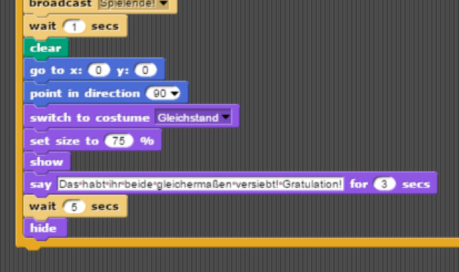

Durch unsere mangelnde Programmier-Erfahrung hat das Tic-Tac-Toe Spiel kleinere Fehler, zu deren Berichtigung es bisher noch nicht kam, aber in der Zukunft kommen wird.
Der erste Fehler ist die Tatsache, dass die Reihenfolge der Spielzüge nicht im Programm vermerkt ist. Das bedeutet konkret, das man mehrmals hintereinander den gleichen Sprite auf das Spielfeld ziehen kann, ohne das der jeweils andere zwischendurch zum Zuge kommt. Wir haben versucht, dass durch Sprechblasen auszubügeln, die nach einem Zug den anderen Spieler auffordern, seinen eigenen Sprite auf das Spielfeld zu ziehen, diese Sprechblasen sind jedoch nicht verbindlich und können leicht umgangen werden. Zudem machen wir uns hier das Allgemeinwissen der Spieler zu nutze. Jeder weiß, wie Tic-Tac-Toe funktioniert oder funktionieren soll.

Der zweite Fehler im Programm hängt eng mit dem ersten zusammen. Man kann nämlich eine Markierung mit seiner eigenen Markierung überschreiben. Dies bringt das Variablensystem durcheinander und führt dazu, dass entweder kein, oder der falsche Gewinner / Verlierer festgestellt wird. Zudem wird das Spiel dadurch unfair, abhängig davon, ob die Spieler von dem Fehler wissen oder nicht. Ein Lösungsansatz könnte sein, vor dem Markieren die Variable des gewünschten / gewollten Feldes zu prüfen, jedoch sind unsere Versuche mit dieser Methode stets gescheitert.
Insgesamt haben wir vor, uns um die Fehler zu kümmern, um die Tic-Tac-Toe Erfahrungen der Spieler so einfach angenehm wie möglich zu gestalten. Jedoch handelt es sich bei diesem Projekt noch um einen Rohdiamanten, den wir, im Laufe des kommenden Halbjahres, schleifen und perfektionieren wollen. Wir hoffen, dass unsere Arbeit bisher trotzdem zu einem zufriedenstellenden Ergebnis geführt hat, für den, der die standardisierten Tic-Tac-Toe Regeln verstehen und anwenden kann